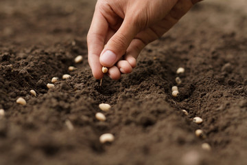

Methods Of Sowing
There are various methods used for sowing the seeds.
Traditional Method
A funnel-shaped tool is used to sow the seeds traditionally. The funnel is filled with seeds and the seeds pass through two or three pipes with sharp ends. These ends enter into the soil and the seeds are placed there.
Broadcasting
In this process, the seeds are scattered on the seed beds either mechanically or manually. In the broadcasting method of sowing, the seeds are spread uniformly and are then covered with planking. When there are a large number of seeds, the work is done using mechanical broadcasters. The seed rate is very high in this system.
Dibbling
Holes are made in the seedbeds and the seeds are placed in it. The seedbeds are then covered. The holes are made at definite depths. A dibbler is used for dibbling. It is a conical instrument that makes proper holes in the seedbed. This method is usually used to sow vegetables.
Drilling
The seeds are dropped into furrow lines in a continuous flow and are then covered with soil. This is done either mechanically or manually. The proper amount of seeds are sown at proper depths and proper spaces. Drilling can be done in the following ways:
- Sowing behind the plough
- Bullock-drawn seed drills
- Tractor-drawn seeds drills
Seed Dropping behind the Plough
This method is commonly used in villages to sow a variety of food crops such as maize, peas, wheat, barley, and gram. Seeds are dropped in furrows behind the plough by a device known as malobansa. It comprises of a bamboo tube with a funnel-shaped mouth. It needs two men to drop the seeds. One handles the bullocks and the plough and the other drops the seeds. However, this method consumes a lot of time and is labour-intensive.
Transplanting
In this process, the seedlings are first planted in nurseries and then planted in the prepared fields. It is usually done to grow vegetables and flowers. A transplanter is used for the purpose. But, this process is time-consuming.
Hill Dropping
In this method of sowing, the selected seeds are dropped at regular spaces but not in a continuous manner.
Check Row Planting
The seeds are planted along straight parallel furrows. A check row planter is used for the method. The row-to-row and plant-to-plant distance is uniform.

Which farms would benefit from this tillage experiment?
Those farms with low rainfall where normal cultivation results in high evaporative or runoff losses and therefore reduced soil moisture;
those farms where rain falls in bursts of high intensity leading to run-off;
those on steeply sloping land with associated problems of water erosion;
those with soils that readily form plough pans that are impenetrable to roots or with soils that become compacted under heavy wheeled traffic;
those with poorly structured soils that readily turn to dust when cultivated under dry conditions or form large clods when cultivated wet;
those farms requiring an early start to the season when weather may commonly preclude normal multi-pass tillage operations.

What is the basal fertilizers
Basal fertilization, also known as pre-planting fertilization, has the main purpose to increase soils biological fertility and concentration of mineral elements, providing big quantities of lacking nutrients.
Thanks to basal fertilization it is possible to create the agronomic basis necessary for the correct implementation of plants production.
It differs from the usual fertilization for its extraordinary application.
Generally, it is carried out:
only once before the cultivation of a soil for herbaceous crops; before planting a woody crop (grape, fruit and olive trees). Basal fertilization guarantees good results of multi-year crops such as fruit trees, while in case of crops in a protected environment, it is better to limit this type of measure because all greenhouses have drip or sprinkling water distribution systems, so fertigation can be effectively used.
Dosage in basal fertilization.
The dosage in basal fertilizations varies according to the results provided by a chemical-physical analysis of the soil concerning: nutrients supply, bulk density, texture, pH, total and active limestone, electrical conductivity, organic substance, Cation-exchange capacity (CEC), total nitrogen, assimilable phosphorus and exchangeable potassium.
How basal fertilization occurs.
This type of fertilization consists in the distribution of slow-release nutrients, which are gradually introduced during the agricultural cycle of crops. Usually, phosphate, potassic and organic fertilizers are used. The guidelines in a given context may change according to the nutrients, especially in relation to their mobility in the soil:
Nitrogen is the main macronutrient for crops and it is very mobile, both in soil and plants. For this reason, its application before transplanting in open field crops is strongly discouraged and must be minimized in protected crops (max 10% of total removals).
Phosphorus is an element with low mobility, which stimulates the development of new roots and it is suitable for pre-planting fertilization.
Potassium is not very mobile in soil too and it’s particularly suitable for basal fertilizations. It is the element that improves fruits quality and, thus, its supply is recommended during their ripening.